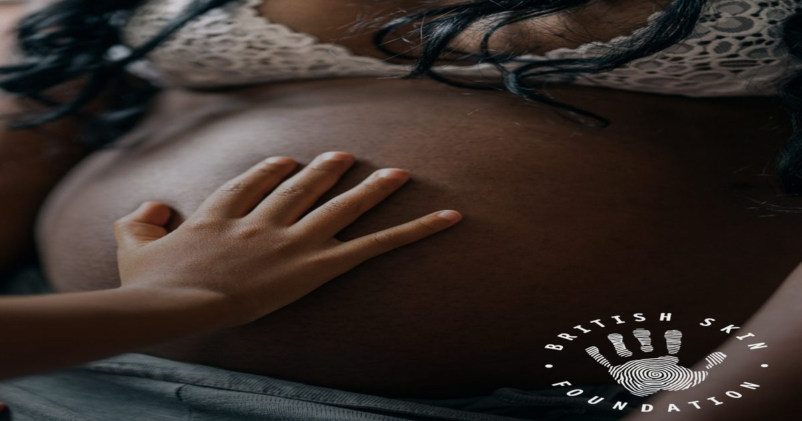

30 лет финансирования исследований кожи: итоги анализа Лондонской школы экономики и фонда
Фонд, занимающийся поддержкой дерматологической науки, отмечает тридцатилетие деятельности. Новый независимый анализ показывает, как долгосрочные вложения формируют современные представления о здоровье кожи.
История сотрудничества
За три десятилетия фонд систематически направлял ресурсы на изучение физиологии кожи, поддерживая лаборатории и клинические группы в разных странах. Это позволило накапливать массив данных о барьерных функциях, иммунных ответах и процессах старения на клеточном уровне.
Постоянное финансирование создало условия для проведения длинных наблюдательных проектов, которые невозможны при краткосрочных грантах. Ученые получали возможность проверять гипотезы на больших выборках и в реальном времени.

Методология оценки влияния
Аналитический центр Лондонской школы экономики применил комбинированный подход: количественный учет публикаций, цитируемости и переводов результатов в клинические рекомендации. Дополнительно были проведены интервью с ведущими исследователями для выявления качественных изменений.
Такой смешанный метод позволяет отделить эффект финансирования от общих трендов в науке. Результаты показывают, что поддержка фонда ускорила появление новых протоколов ухода и корректировки существующих стандартов.

Ключевые направления исследований
Приоритетом оставалось изучение микробиома кожи, механизмов восстановления барьера и роли воспаления в преждевременном старении. Эти темы лежат в основе современных косметических формулировок и процедур.
Параллельно развивались работы по персонализированному подбору активных веществ с учетом генетических и эпигенетических маркеров. Это открывает путь к более точному подбору ухода без лишних испытаний.
Практический смысл для ухода
Для специалистов и потребителей главное — понимание того, что доказательная база растет постепенно и требует критического чтения новых данных. Не каждая публикация сразу меняет протоколы салонов и домашнего ухода.
Вопросы к врачу или косметологу должны касаться уровня доказательности применяемых компонентов, соответствия протокола текущим рекомендациям и возможности адаптации под индивидуальные особенности кожи.
Как обсудить доказательную базу ухода с врачом
При выборе средств полезно спросить у дерматолога, у каких ингредиентов есть опубликованные исследования. Анализ LSE показывает, что долгое финансирование формирует массив доказательств, но не каждое исследование применимо к конкретному типу кожи. Специалист объяснит, какие работы релевантны вашим задачам — восстановление барьера, воспаление, фотостарение — и какие маркеры в публикациях говорят о качестве: размер выборки, контрольная группа, раскрытие конфликта интересов. Возьмите список используемых или планируемых продуктов: врач поможет отделить маркетинг от данных.
Не все ингредиенты с доказательной базой подходят всем. Ретиноиды, кислоты, пептиды — у каждого есть противопоказания: беременность, розацеа, поврежденный барьер, индивидуальная непереносимость. Результат зависит от концентрации, стабильности формулы, сочетания с другими активами и регулярности применения. Финансирование науки создает знания, но перевод их в личный протокол требует клинического мышления. Регулярные визиты позволяют корректировать уход при изменении состояния кожи или появлении новых данных.
Критерии выбора средств с доказательной базой
Перед визитом к дерматологу или косметологу составьте список используемых средств с указанием активных компонентов и концентраций, если они известны. Опишите реакции кожи на прошлые ингредиенты — раздражение, сухость, высыпания — это поможет специалисту отсечь непереносимость. Зафиксируйте режим дня, уровень стресса и особенности питания: эти факторы часто объясняют, почему даже хорошо подобранная формула не даёт ожидаемого эффекта. На консультации уточните, какие исследования подтверждают действие заявленных компонентов именно при вашей проблеме, и есть ли данные о совместимости с другими активами в вашем уходе.
Подход не подойдёт тем, кто ищет мгновенное изменение текстуры или цвета кожи без изменения базовых привычек: защиты от УФ, мягкого очищения и восстановления барьера. Результат зависит от регулярности применения, соответствия средства типу кожи и стадии проблемы, а также от генетической предрасположенности к воспалению или пигментации. Даже ингредиенты с сильной доказательной базой — ретиноиды, ниацинамид, пептиды — работают накопленно и требуют адаптации кожи. Без системного взгляда на уход как на процесс, а не разовый акт, изолированные средства редко дают устойчивую динамику.
Коротко: Тридцатилетнее финансирование фундаментальных и прикладных исследований сформировало современный взгляд на физиологию кожи и принципы доказательного ухода. Понимание механизмов позволяет выбирать процедуры и средства осознаннее, опираясь на науку, а не на маркетинг.
Какие аспекты доказательной косметологии вам кажутся самыми важными при выборе ухода или процедуры?